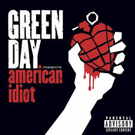

Información General
- Año de creacion: 1987
- Cantante: Billie Joe Armstrong
Imágenes de la banda
Descripcion:
Green Day es una influyente banda de punk rock originaria de Estados Unidos, conocida por su energía explosiva en el escenario y por sus letras cargadas de crítica social, rebeldía y reflexiones sobre la juventud y la sociedad contemporánea. Formada en 1986 en Berkeley, California, por Billie Joe Armstrong (voz y guitarra), Mike Dirnt (bajo) y Tré Cool (batería), Green Day emergió en la escena punk de la Costa Oeste de los Estados Unidos en los años 90. Su álbum de 1994, "Dookie", les catapultó al estrellato mundial con éxitos como "Basket Case" y "When I Come Around", convirtiéndose en uno de los discos de punk más vendidos de todos los tiempos. A partir de ahí, la banda continuó lanzando álbumes exitosos como "American Idiot" (2004), un álbum conceptual que aborda temas políticos y sociales, y "21st Century Breakdown" (2009). Green Day ha sido una influencia crucial para muchas bandas posteriores y ha dejado una marca indeleble en la historia del punk rock y la música en general. Su capacidad para combinar melodías pegajosas con letras provocativas y su energía en vivo los han convertido en una de las bandas más icónicas e influyentes de su generación.
Calificación
Calificación: 10/10